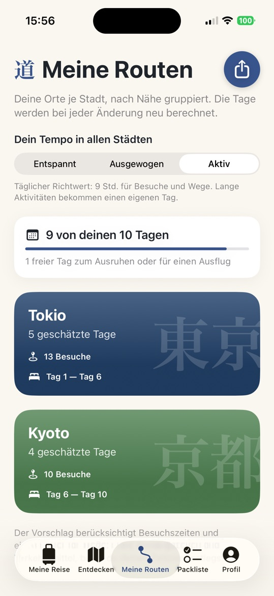
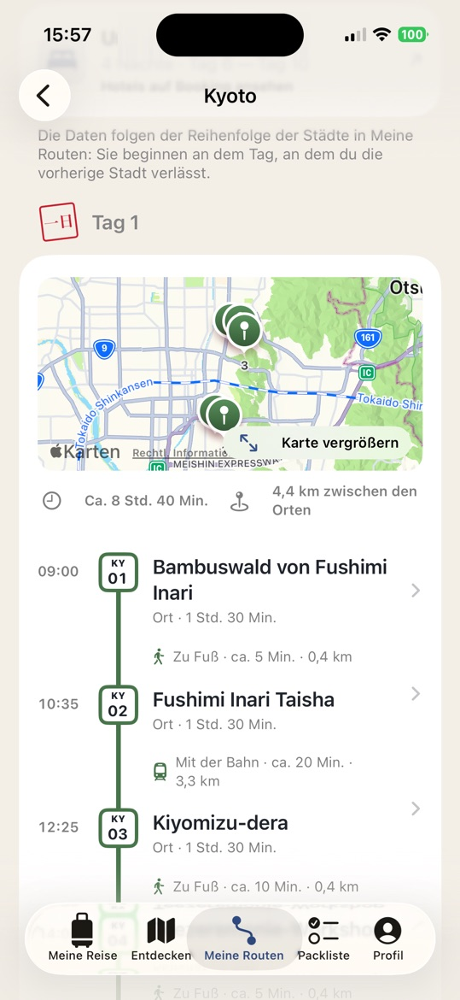

Deine Japanreise, bestens organisiert.
Wähle die Orte, die du sehen willst, und die App berechnet, wie viele Tage du in jeder Stadt brauchst, und erstellt eine Route für jeden Tag, mit Karte und Fußwegen oder Zugfahrten. Dazu eine Packliste, damit du vor dem Abflug nichts vergisst.
Der Store öffnet sich nicht? Tippe oben rechts auf ··· und wähle „Im Browser öffnen“.
Kostenlos · Kein Abo · iPhone und Android
